Brief
To create a drawing program that allows a user to make shapes and designs using different colours.
Initial Project Backlog
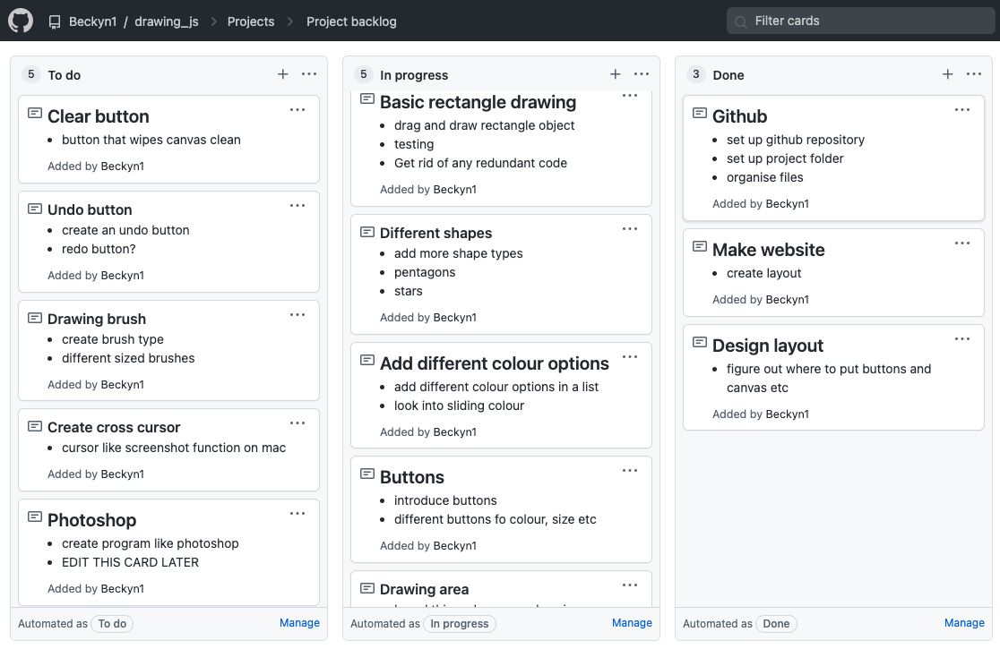Sprint 1

In Sprint 1 I wanted to create a basic, very simple drag and drop rectangle function.
Sprint 1 board in progress

Canvas Link
Sprint Review
In this Sprint, I wanted to be able to use my mouse to pick a place on the canvas and drag the mouse to create a rectangle that stays on the canvas. This is a simple function which most of my future builds will be modelled off of. Based on my testing, it does the basic functions as expected and well. However, I found a few errors that I will need to fix in a later sprint.
- A error I had was that when you dragged from outside the canvas, a rectangle appeared in the top left corner that extended to where the mouses position last was. I will need to look into fixing this in a later sprint. I need to consider that if the user goes outside the canvas, if a rectangle will appear in the part of their drag that is within the canvas, or for no rectangle to appear at all.
- Another error I had was where when you started your mouse from inside the canvas and dragged it out, no rectangle appeared. In terms of designing a drawing program, I would like to fix this later so that a rectangle will still appear under this circumstance.
- I also found that when you move the mouse and then tap the touchpad on a macbook a randomly sized rectangle appears. It only does this when you tap the touchpad not click it though, so I'm not sure how I would go about fixing this as it seems like a rather complex issue, however, I will look into it nonetheless.
- Design wise, I want to change the appearance of the lines/circle guideline for the rectangle. It does not look aesthetically pleasing nor professional, so in a later sprint I will possibly take the lines and the circle out or just redesign how it works.
- In my next sprint, I also want to look into creating more shapes.
Github Push

Sprint 2
The purpose of this sprint was to create buttons that relate to ellipse and rectangle functions.


Sprint Review
In this sprint I made an ellipse function where the user can drag and drop an ellipse that fills in with a colour, and I also made buttons which control the shape functions. I am happy with how the ellipse function works, and I also changed the design of the rectangle function, so it looks cleaner (no lines or circle in the middle). My buttons work sufficiently as expected, but I want to change the placement and aesthetic design of them.
Testing
-
For my first design of the ellipse function, my drawing stroke guide didn't match up with the filled ellipse that was created. The stroke guide was dragged but the filled ellipse appeared at a different position and a smaller size. I managed to fix this, however, as I found out that I was setting the measurements for the ellipse twice, so in my init file with the ellipse object and when I called the ellipse object.
-
In this test video I was trying to test one of my methods for the buttons that correspond to a shape. I was trying to use true and false to set when the drawing guide for each shape would be drawn. However, this did not work as the previous drawing guide would appear for the first shape of the new shape clicked, instead of the shape clicked's drawing guide. To fix this issue, I found out that my interactive button selected was set to null, so I changed it to "placeholder" and then was able to set if statements to make the correct drawing guides when the shapes are clicked.
-
This is my final test video for sprint 2. All my buttons and shape functions worked as expected, but I still have the errors of going outside of the canvas and trying to make a shape, and the issue where moving the mouse and tapping the touchpad would create a random shape. I will fix these in my next sprint as I plan on creating an area where you can only draw in (buttons in a separate area) and this should resolve the boundary errors.
Sprint 3
In this sprint I added a smaller drawing space for the user to draw on.
 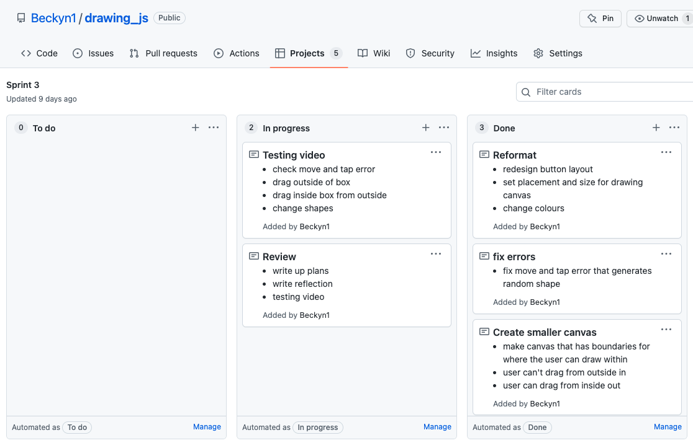
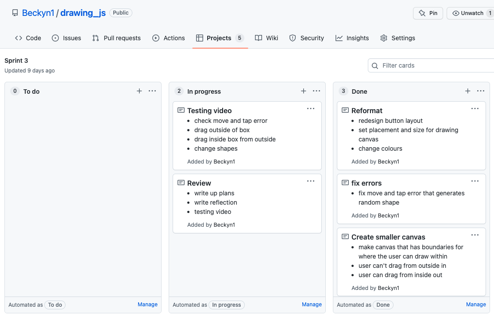
In this sprint I added a smaller canvas in for the user to draw on. This separated the buttons from the space which the user can draw in. This design made it easier for the user to use the drawing program as it was clearer where each function was occurring. It also made it look cleaner. As well as this, I also fixed my issue where a random shape would appear when the user would tap the trackpad.
Now, instead of a random shape occurring when tapping the trackpad, nothing happens at all. This took me a while to figure out, but I found that after making my boundaries for drawing, the issue became resolved. The boundaries also work well as the user is able to draw a shape in the space and drag out into the non drawing area and a shape will appear. If the user, however, drags from outside in, a shape does not appear. These two functions were my intention originally, so I am content with how it works.
In my next sprint I want to add the ability to change the colour of the "tool" that is being used. For example, when the user selects rectangle they can change the colour of it and then can click ellipse and the changed colour will stay selected.
Sprint 4
In Sprint 4 I added the option to change the colour of the shape selected.
 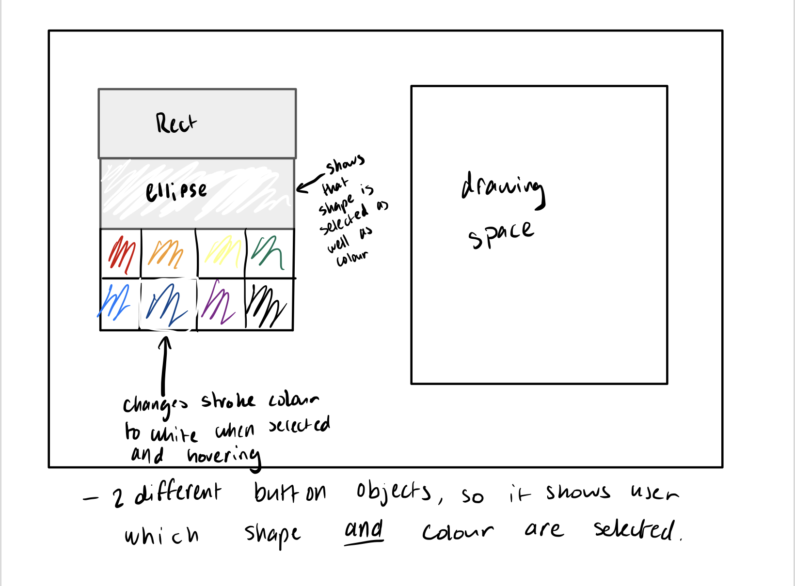
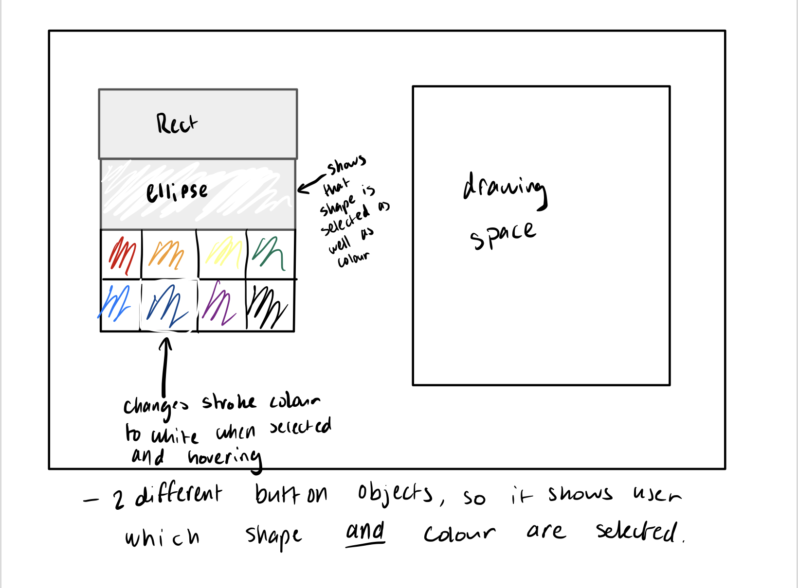

For the colour options I tested multiple options before I figured out how to make it work properly. I was trying to make it so that it would fill the colour of the object when the colour button is selected. I wanted to not have to use text to detect the button being clicked, so I had to think of a new way to do it. This video is of my second attempt where I was trying to change colour in button class.
The design I ended up with has a simple "swatch" system, where the colour will change based on what happens to the swatch. Now, when the shape is called in control, instead of having a permanent colour, there is a placeholder-colourname, which is related to swatch and makes it so that the colour changes to the colour button selected. This system is very flexible and will allow me to easily add more colours.
In my next sprint I want to add the ability to undo and clear the canvas, as this is a helpful tool for a drawing program.
Sprint 5
In this sprint, I added an undo and a clear button.
 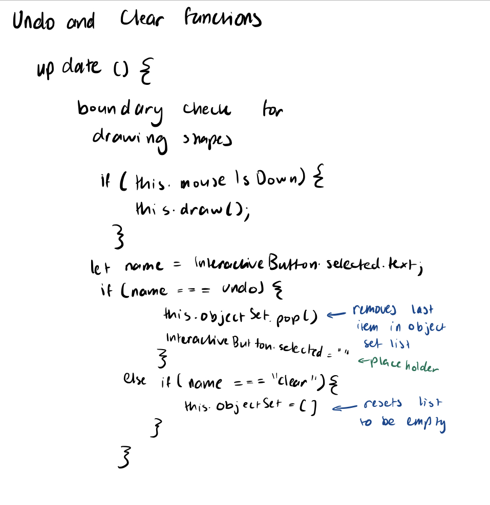
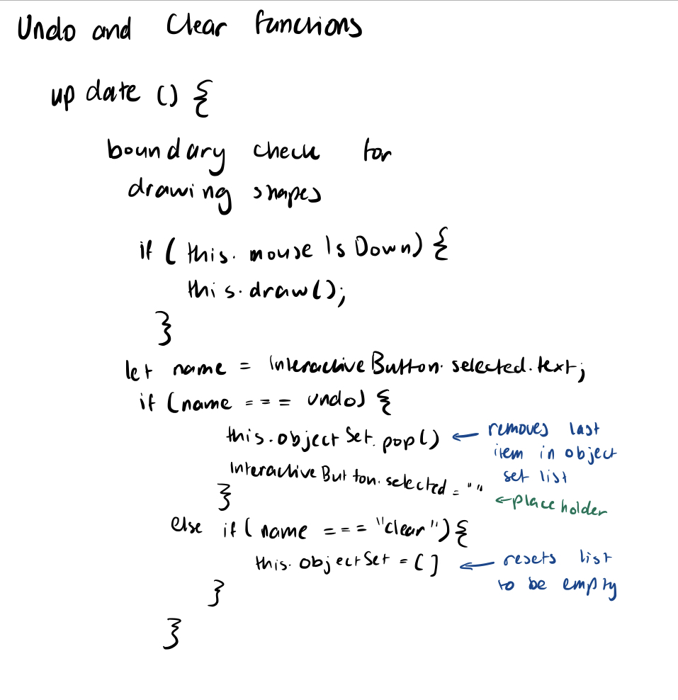
The undo and clear button were quite simple to achieve. For the undo button, I just added a pop element so that the last item on the objectset list (where all the shapes are being pushed into) is removed. For the clear button, I just reset the list, so it was empty. It was slightly troublesome to figure out where to store the clear and undo function, however, as in mUp the user would have to click the button twice for it to work. Overall though, I am happy with how it is functioning.
I am happy with the progress I have made in this sprint. The colours change sufficiently, though in the future I am going to look into adding more colours and also making it clearer to see which colour is selected. In my next sprint, I plan on adding more shapes, possibly a heart, diamond, star. I also need to reconfigure the sizing and position of my buttons in order to fit the new shape buttons.
Sprint 6
In this sprint I added more shapes and redid the format of the program.
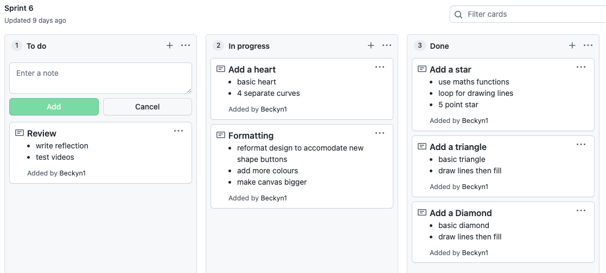
I wanted to change the design of my page to accommodate space for the buttons for the new shapes. This photo is my original design, and I didn't like it, so I redesigned it. The newer design is a lot easier and clearer to use, and it looks more cohesive. As can be seen on the plan, I changed the alignment and made buttons bigger. I also wanted to make the canvas and drawing space bigger.

Overall, I have achieved what I wanted to in this sprint. The shapes were quite hard to figure out due to the maths elements, but I think it overall turned out good. It was tricky trying to do the heart, but I found the best way to do it was to make 4 individual curves that are connected to make a heart. I think I may change the design of the star later, however, as I want a more flexible star code that is easier to change when adding in new points. For the final sprint design of this sprint, I have left space on the right side of the shape selection buttons to accommodate space for line/brush buttons, which I plan to add in my next or a later sprint.
Sprint 7
In sprint 7 I added in a line and the ability to change line width.


My first design for changing the line width was to individually have 3 different buttons for each line width (so the user would click the small button, and it would produce a small width line, then in the button code the same code for a line would be repeated for each width). Although this worked, the code was highly repetitive and not flexible. I wanted to add a brush in the next sprint, with variable sizes as well, which meant I would have to again make 3 separate buttons for each size etc. So, instead, I made a new button set specifically for sizes, so that it would show the size that is selected when the user would switch between lines and (eventually) brushes, without having to write the code individually per brush and size. This was actually a simpler code to write than I had initially thought, and it worked very well as the line could only be drawn if a size was also selected and vice versa. Going into my next sprint, where I plan on adding brushes, I think this design is very useful.
Sprint 8

For sprint 8, my main goal was to make a brush and along the way, I decided to redo the star shape.
I had no idea where to start off with when making a brush function, so I had to do some research. I found this person on YouTube called "Franks Laboratory", where he was showing how the javascript stars worked mathematically as well as how to make a star brush. From this video, I decided to redo my star shape as I liked his version of doing it better than the one I currently had, and I also derived my brush from his star brush.
I made a test file to try out his technique (as can be seen in the video). Though his code was a bit different to the code I used in my drawing program, I figured that it was essentially just a star function being called under the mMove event. So, I did a lot of trial and error and found out that I could just insert a circle function into mMove and a brush would form. However, at first because I used a function not an object, the brush would only go on the canvas and not the drawing space. I then had to make it an object but also then had to add a ctx.clip to the drawing space to cut out the brush strokes that went over the boundaries. Once I had figured it out, however, I was able to experiment with more brushes. I found some code for how to make a spray brush, and I adapted that to my program. I also experimented with different shape types and made some quite unique brushes.
Stars
My first design for the star was using line to and move to repetitively to go to certain points from the mouse. This, however, was not working, as can be seen in the photo. The code was also very repetitive and inflexible.

The second design was by using trig functions and loops to draw and connect lines. This did work and worked a lot better than the first attempt, but, however was not very flexible in terms of if I wanted to add more star points later as there was a lot of fixed values (the design is essentially a pentagon with spikes, so you have to change values for both attributes to add more points(increase number of loops doesn't do anything). The star also didn't look like how I wanted it to as it was quite thing and on a weird angle, and I also wanted the star to not change width as it changes size (so it always stays a perfectly shaped star).
 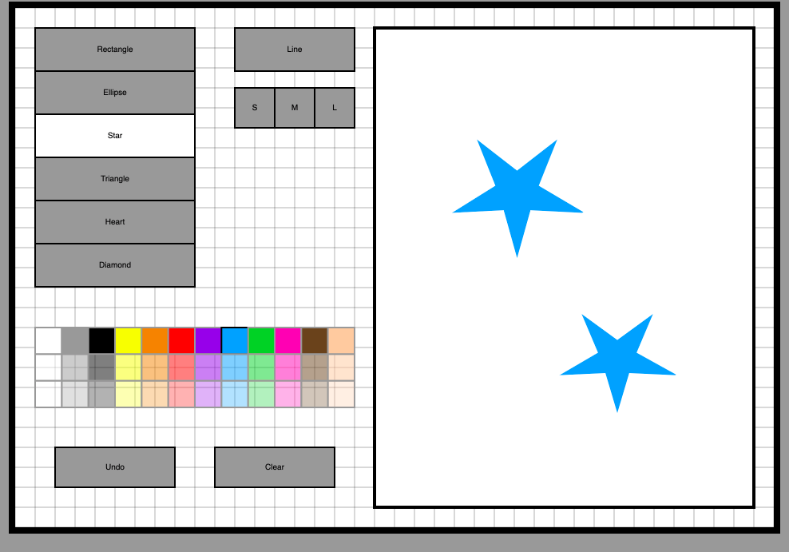
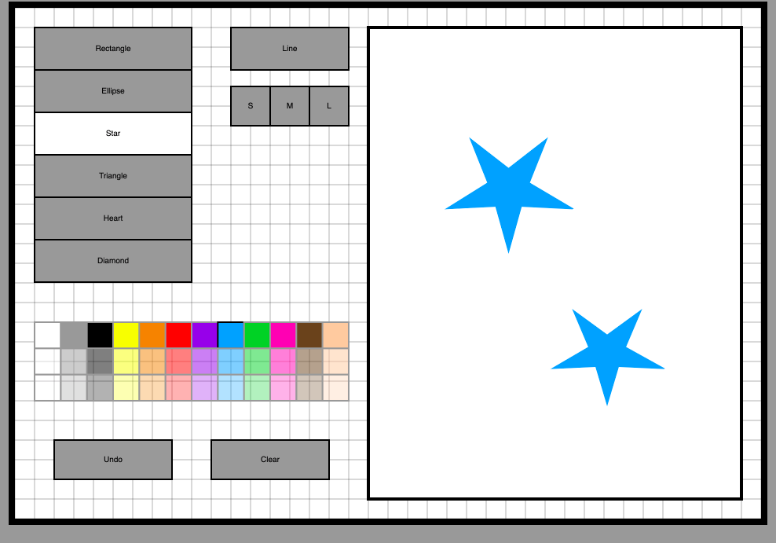
The third design was done by having a concept of two circles, so there is an inner and outer radius. The idea is that there is a line that draws from the centre to the outer radius and then to the inner radius, and then the shape rotates to draw the next point depending on the number of points used (rotates it based on pi/number of points as it splits up a circle). I like this design better as it makes it very easy to change the number of points a star has, as I can just change the n value when calling the function. It also increases the size of the star as a whole instead of changing width and height individually.
 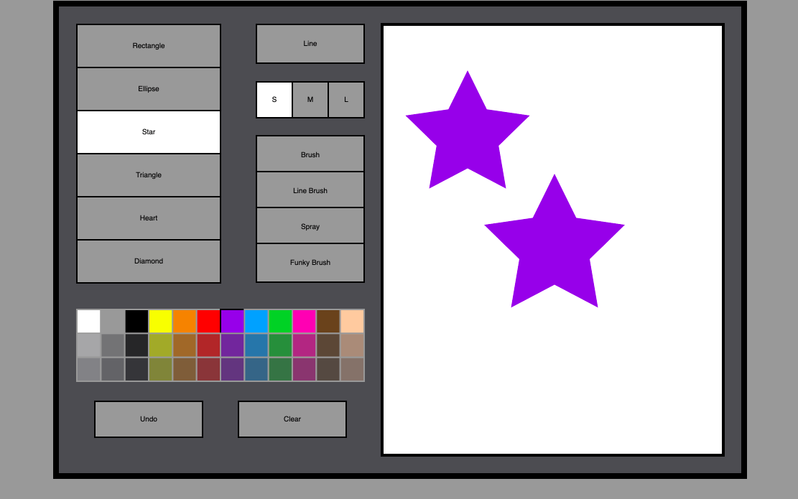
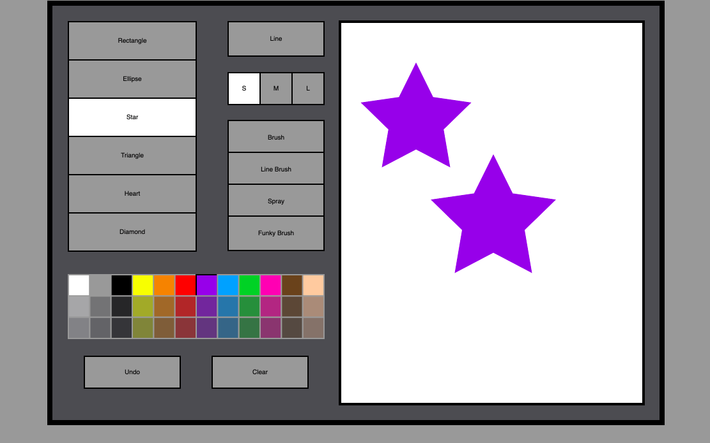
I think this will be my last sprint of adding new things to my drawing program. I am quite happy with how the program is currently, and I don't think there's much I can add at this point. There was a minor error with the stroke colour for my funky brush as can be seen in the video, but I will fix this in the next sprint as well as do code commenting/doctyping and cleaning up code.
Sprint 9
Sprint 9 is code commenting and error fixing.
Sprint 9 final showcase of the abilities of the drawing program.